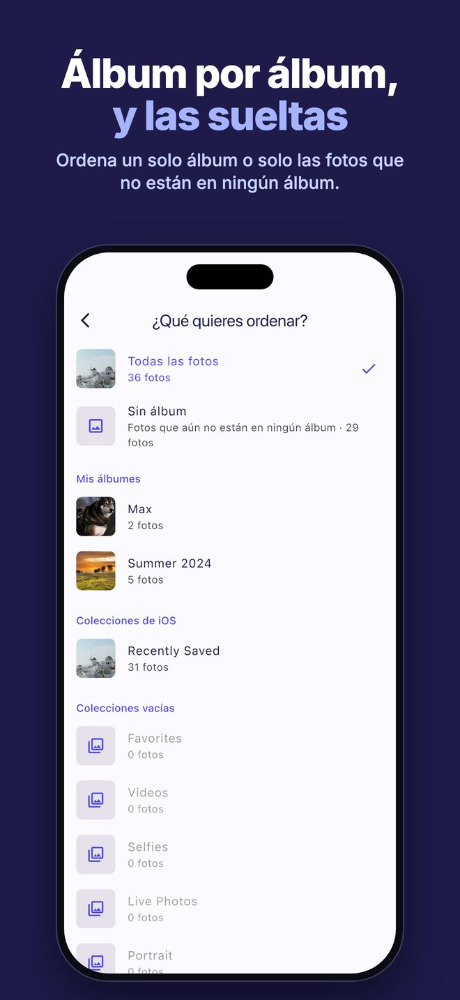
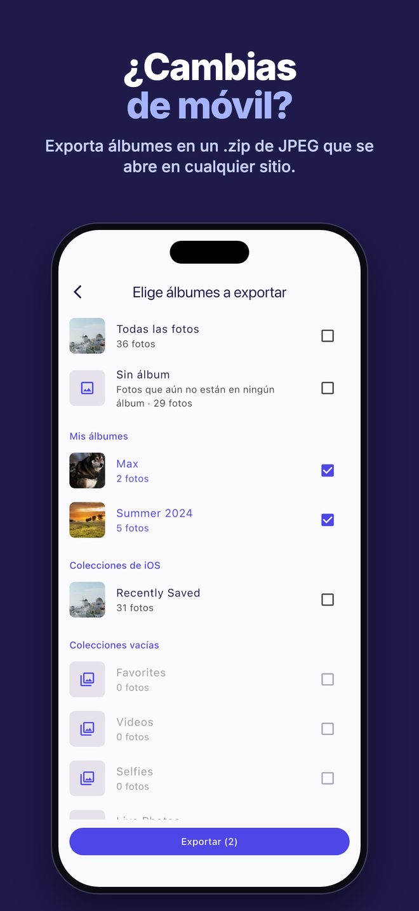
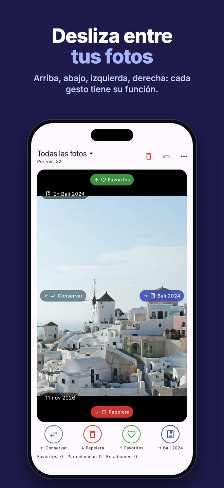
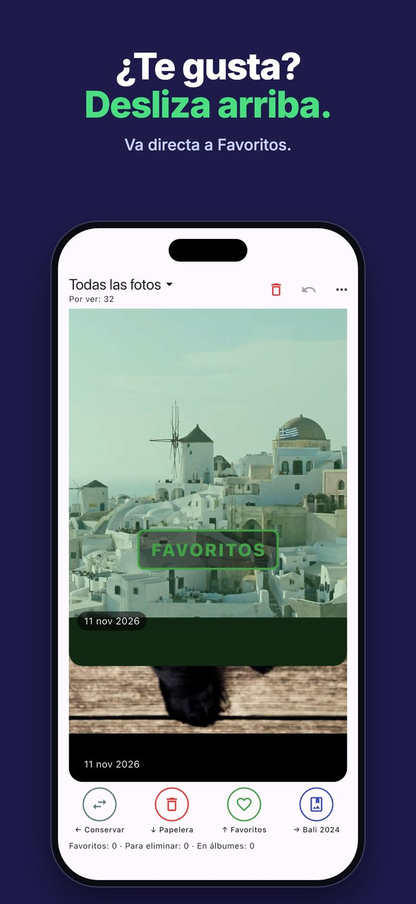

Álbum por álbum
Ordena toda la fototeca, solo las fotos que aún no están en ningún álbum o un solo álbum. Cada foto muestra en qué álbumes está ya.
Photo Sensei te muestra tus fotos una a una. Desliza arriba, abajo, a la izquierda o a la derecha y la foto queda ordenada: tú decides qué hace cada dirección.
Descargar en el App Store0,99 € una sola vez · sin suscripción · sin anuncios

Ordena toda la fototeca, solo las fotos que aún no están en ningún álbum o un solo álbum. Cada foto muestra en qué álbumes está ya.

Exporta uno o varios álbumes en un solo .zip, una carpeta por álbum, con JPEG que se abren en cualquier sitio, también en Windows. Exportar nunca borra nada.

Conservar, añadir a Favoritos, a la papelera, a un álbum, quitar de un álbum u ocultar. Cada dirección hace lo que elijas, y todo se puede deshacer.

Las fotos borradas van a Eliminado, e iOS pide una sola confirmación para todas.
Photo Sensei funciona por completo en tu iPhone. Sin cuenta, sin nube, sin rastreo, sin anuncios. Tus fotos nunca salen de tu dispositivo: “No se recopilan datos”.
No. Las fotos que deslizas a la papelera solo se marcan. Pasan a Eliminado cuando tocas “Eliminar ahora” y confirmas, y puedes recuperarlas durante 30 días.
No. Es una compra única (0,99 € en España; el App Store ajusta el precio en otros países).
Nunca. La app no tiene cuenta ni usa la red.
Copias JPEG de los álbumes elegidos, una carpeta por álbum.
¿Problemas o ideas? Escribe a info@optiapp.it.